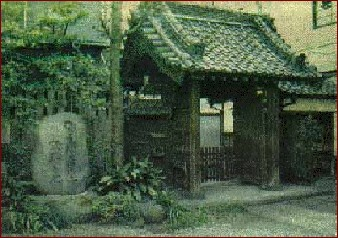

Jigoro Kano
(1860-1938),
the founder of judo:
"Judo should become a combat sport for physical training, general �education of young people, philosophy, and art of daily life."

Kodokan, - the first school of Judo. Japan, Tokyo.
This school was opened in May 1882 in Tokyo Buddhist temple Eysedzi.
21-year-old Japanese Jigoro Kano� has captured a key point of judo: "If
your partner pulls, - I push, and if he pushes, - I pull."
OATH OF JUDOKA
Jigoro Kano set the rule that all students before starting study in
Kodokan judo school, should give a solemn oath, which consist of the
following:
1. Once I decided to devote myself to judo, I would not refuse from
training without serious reason.
2. By my behavior, I promise not to drop the dignity of "Dojo" (judo
training class).
3. I will never betray the secrets of the school to the uninitiated and
only in extreme case I will take lessons anywhere else.
4. I promise not to give lessons without permission of my teacher.
5. I swear my whole life to respect the rules of "Kodokan", now as a
student and later as a teacher, if I will became a teacher.
Do the modern judoka giving the Oath? The answer is known to
initiates.
WEIGHT CATEGORY IN JUDO
There are were no weight category in judo until 1964. It means -
athletes competed in the Open (absolute) category. Judo competition of
1964 took place in three weight category. During 1972 - 1976 - in five
weight category. Since 1980 - in seven weight category. Currently,
competition among juniors, youth , and adults
(from 17 years) conducted in the following weight categories:
| Weight category | Men | Women |
| extra-lightweight |
till 60 kg | till 48 kg |
| half-lightweight |
60 � 66 kg | 48 � 52 kg |
| (lightweight |
66 � 73 kg |
52 � 57 kg |
| half-middleweight |
73 � 81 kg |
57 � 63 kg |
| middleweight |
81 � 90 kg |
63 � 70 kg |
| half-heavyweight |
90 � 100 kg |
70 � 78 kg |
| heavyweight |
more than 100 kg |
more than 78 kg |
Weighing - is a necessary procedure before any competition, usually
takes place about 2-3 hours before begining of competition.
SPORTS CAREER IN JUDO
Olympic Games.
World Championship.
European Championship.
Championship of Ukraine.
City Championship, State Championship.
Only a few ascend to a higher level.
Ukrainian Olympians:
Ruslan Mashurenko (90 kg) - bronze medal (Sydney 2000),
Roman Gontyuk (81 kg) - silver medal (Athens 2004) and bronze medal
(Beijing 2008).
OLYMPIC GAMES 2012
The International Judo Federation (IJF) in March 2009 approved the
final system of qualification for the judo tournament at the XXX
Olympic Games 2012 in London (United Kingdom). The selection of
participants will take place over two years - from 1 May 2010 to April
30, 2012.
In the program of OG-2012, in judo tournament will take part total 386
fighters. For the first time a license for OG will be registered on
name and will belong not to country, but to the athlete. In this case,
to participate in the Olympics can no more than one judoka from the
country in each weight category. In the Olympics-2012 IJF aims to
participate representatives of 100 countries
.
14 licenses - the host nation of OG - The United Kingdom of Great
Britain.
countries, which as a result of qualification competition would not win
a license to participate in the Olympics, but not more than one
"wild-card" per country.
252 licenses - according to the WRL (world ranking list) on April 30,
2012. 22 judoka in each weight category (22 x 7 = 154) and 14
judoka-women in each weight category (14 x 7 = 98).
Olympic qualification consists from the sum of the top 5 results (from
1 May 2010 to April 30, 2011) - 50% points + sum of the top 5 results
(from 1 May 2011 to April 30, 2012) - 100% points.
In case if the Olympic qualification get two or more athletes from one
country, the license belongs to the wrestlers who wins higher place in
the WRL, other athletes from this country are excluded from the list of
Olympic qualification, and the licenses transferred to the athletes
from the countries that occupy the next positions in the WRL.
100 licenses - continental qualification.
Europe (50 countries) - 14 men + 11 women = 25 licenses.
Africa (47 countries) - 14 men + 10 women = 24 licenses.
America (42 countries) - 13 males + 8 females = 21 licenses.
Asia (38 countries) - 12 males + 8 females = 20 licenses.
Oceania (17 countries) - 7 men + 3 women = 10 licenses
Continental licenses will be distributed among judoka, that didnt fall
into the 22 best WRL - for men and 14 best WRL - women. In addition,
continental license can get no more than one athlete from the country
for all weight categories and not more than two countries per continent
in each weight category.
Judo tournament at the 2012 Olympics in London will be held by the
Olympic system. The right for consolation matches receive only 4 judoka
who lost in the quarter finals. Top eight in each weight category,
according to the WRL (April 30, 2012) by the draw - scatter.
Scoring Table for the WRL (world ranking list)
| Place | World Cup | Grand Prix
| Grand
Slam | Grand Slam | World Champion-ship | Olimpic Games | Continental Champion-ship
| Champion-ship OJU |
| 1 | 100 | 200 | 300 | 400 | 500 | 600 | 180 | 80 |
| 2 |
60 | 120 |
180 | 240 | 300 | 360 | 10 8 | 48 |
| 3 |
40 | 80 | 120 | 160 | 200 | 240 | 72 | 32 |
| 5 |
20 | 40 | 60 | 80 | 100 | 120 | 36 | 16 |
| 7 |
16 | | | | 80 | 96 | 28 | 12 |
| 1/16 |
12 | 24 | 36 | | 60 | 72 | 20 | 12 |
| 1/32 |
8 | 16 | 24 | | 40 | 48 | 12 | 8 |
| 1 won fight |
4 | 8 | 12 | | 20 | 24 | 8 | 4 |
participation |
| | | | 4 | | | |
The first 12 months after completion of the competition judokas awarded
100% points, the next 12 months - 50% points, 24 months after
completion of the competition points canceling. For the scoring in the
WRL athlete should win at least one victory. If the judoka did not win
any fight - points will be not added.
WRL is formed from the sum of the top five results in the past 12
months - are added 100% points and the top five results in the past
13-24 months - are added 50% of the points.
In the case of the equal score points, higher place in the WRL receives
judoka that:
1) have a large amount of points gained only at the world
championships;
2) have a large amount of points scored only in the tournaments "Grand
Prix"," Grand Slam " and "Masters";
3) have a great first result, in the case of equality of the second
result, etc.;
4) In case of equality of all these indicators, the decision makes the
Executive Committee of the IJF, this paragraph applies only to Olympic qualification.